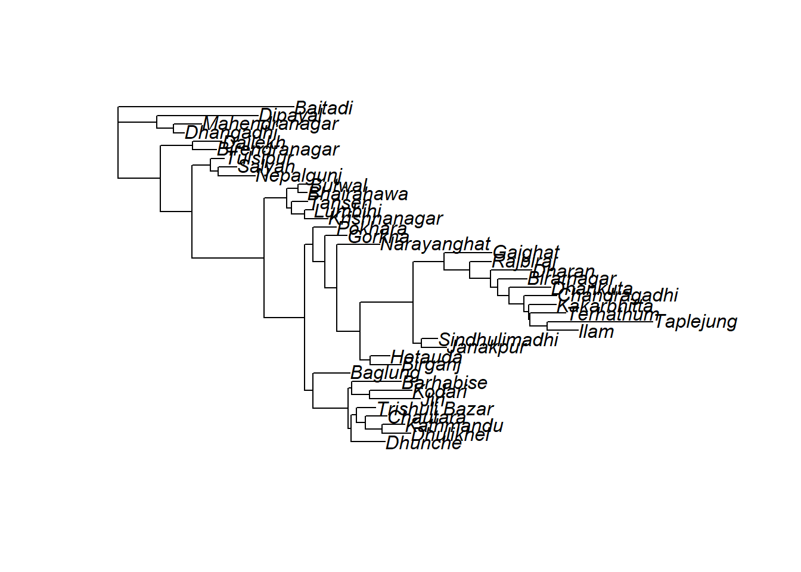
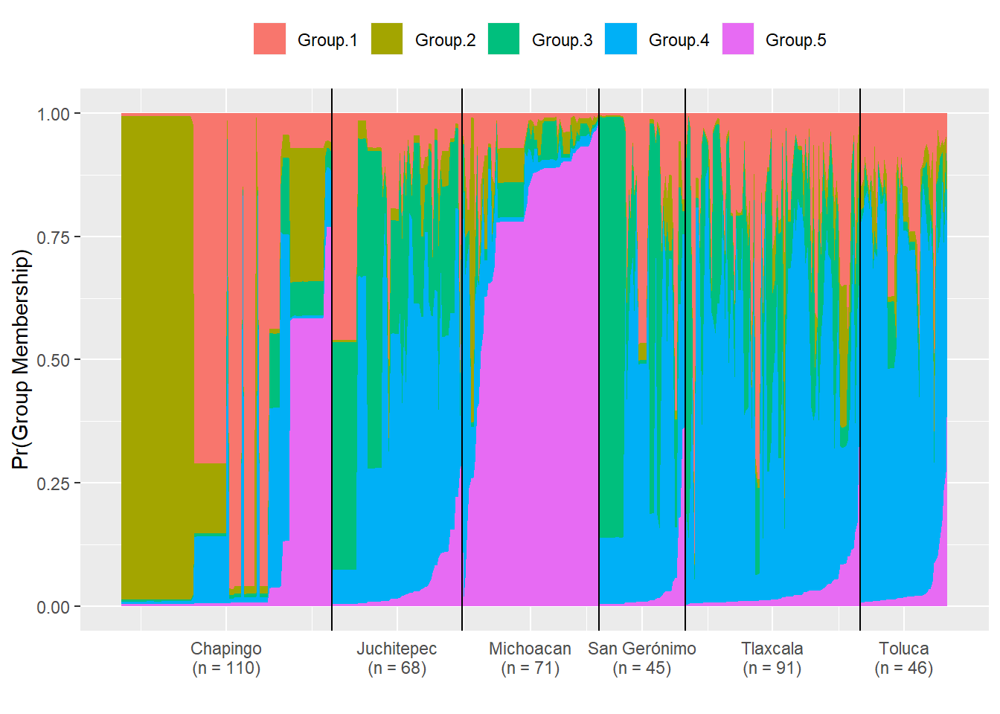

diploid_pinf<- readRDS("diploid_pinf.RDS")
diploid_pinf## Loading required package: poppr## Loading required package: adegenet## Loading required package: ade4## Registered S3 method overwritten by 'spdep':
## method from
## plot.mst ape##
## /// adegenet 2.1.1 is loaded ////////////
##
## > overview: '?adegenet'
## > tutorials/doc/questions: 'adegenetWeb()'
## > bug reports/feature requests: adegenetIssues()## Registered S3 method overwritten by 'pegas':
## method from
## print.amova ade4## This is poppr version 2.8.3. To get started, type package?poppr
## OMP parallel support: available##
## This is a genclone object
## -------------------------
## Genotype information:
##
## 221 original multilocus genotypes
## 431 diploid individuals
## 11 codominant loci
##
## Population information:
##
## 2 strata - Region, Year
## 6 populations defined -
## Chapingo, Juchitepec, San Gerónimo, Toluca, Tlaxcala, Michoacandiploid_pinf_cc <- clonecorrect(diploid_pinf)
diploid_pinf_cc##
## This is a genclone object
## -------------------------
## Genotype information:
##
## 221 original multilocus genotypes
## 224 diploid individuals
## 11 codominant loci
##
## Population information:
##
## 2 strata - Region, Year
## 6 populations defined -
## Chapingo, Juchitepec, San Gerónimo, Toluca, Tlaxcala, Michoacanlibrary(strataG)## Loading required package: apex## Loading required package: ape## Loading required package: phangorn##
## Attaching package: 'phangorn'## The following object is masked from 'package:adegenet':
##
## AICcgen2gtype <- function (x) {
gen.mat <- genind2df(x, usepop = TRUE, oneColPerAll = TRUE)
strata <- x@strata
rownames(strata) <- rownames(gen.mat)
x@strata <- strata
gen.mat[gen.mat == "NA"] <- NA
has.pop <- !is.null(x@pop)
df2gtypes(x = gen.mat, ploidy = x@ploidy[1], id.col = NULL,
strata.col = if (has.pop)
1
else NULL, loc.col = if (has.pop)
2
else 1,
schemes = x@strata, other = other(x))
}
diploid_pinf_cc.g <- gen2gtype(diploid_pinf_cc)
pairwise_fst <- pairwiseTest(diploid_pinf_cc.g, stats = "fst", nrep = 100)##
## <<< gtypes created on 2019-11-05 08:02:26 >>>
## 2019-11-05 08:02:26 : Pairwise tests : 100 permutations
## 2019-11-05 08:02:26 : Chapingo v. Juchitepec
## 2019-11-05 08:02:28 : Chapingo v. Michoacan
## 2019-11-05 08:02:28 : Chapingo v. San Gerónimo
## 2019-11-05 08:02:29 : Chapingo v. Tlaxcala
## 2019-11-05 08:02:29 : Chapingo v. Toluca
## 2019-11-05 08:02:30 : Juchitepec v. Michoacan
## 2019-11-05 08:02:30 : Juchitepec v. San Gerónimo
## 2019-11-05 08:02:31 : Juchitepec v. Tlaxcala
## 2019-11-05 08:02:31 : Juchitepec v. Toluca
## 2019-11-05 08:02:31 : Michoacan v. San Gerónimo
## 2019-11-05 08:02:32 : Michoacan v. Tlaxcala
## 2019-11-05 08:02:32 : Michoacan v. Toluca
## 2019-11-05 08:02:33 : San Gerónimo v. Tlaxcala
## 2019-11-05 08:02:33 : San Gerónimo v. Toluca
## 2019-11-05 08:02:34 : Tlaxcala v. Toluca
##
## Population structure results:
## pair.label Fst Fst.p.val
## 1 Chapingo (17) v. Juchitepec (28) 0.05933588 0.00990099
## 2 Chapingo (17) v. Michoacan (43) 0.06152119 0.00990099
## 3 Chapingo (17) v. San Gerónimo (22) 0.06584521 0.00990099
## 4 Chapingo (17) v. Tlaxcala (76) 0.05181373 0.00990099
## 5 Chapingo (17) v. Toluca (38) 0.04356232 0.00990099
## 6 Juchitepec (28) v. Michoacan (43) 0.06805726 0.00990099
## 7 Juchitepec (28) v. San Gerónimo (22) 0.05353811 0.00990099
## 8 Juchitepec (28) v. Tlaxcala (76) 0.04262064 0.00990099
## 9 Juchitepec (28) v. Toluca (38) 0.06661917 0.00990099
## 10 Michoacan (43) v. San Gerónimo (22) 0.11561847 0.00990099
## 11 Michoacan (43) v. Tlaxcala (76) 0.10420317 0.00990099
## 12 Michoacan (43) v. Toluca (38) 0.10782517 0.00990099
## 13 San Gerónimo (22) v. Tlaxcala (76) 0.01159181 0.03960396
## 14 San Gerónimo (22) v. Toluca (38) 0.07121965 0.00990099
## 15 Tlaxcala (76) v. Toluca (38) 0.06161425 0.00990099pairwise_fst## $result
## pair.label strata.1 strata.2 n.1 n.2
## 1 Chapingo (17) v. Juchitepec (28) Chapingo Juchitepec 17 28
## 2 Chapingo (17) v. Michoacan (43) Chapingo Michoacan 17 43
## 3 Chapingo (17) v. San Gerónimo (22) Chapingo San Gerónimo 17 22
## 4 Chapingo (17) v. Tlaxcala (76) Chapingo Tlaxcala 17 76
## 5 Chapingo (17) v. Toluca (38) Chapingo Toluca 17 38
## 6 Juchitepec (28) v. Michoacan (43) Juchitepec Michoacan 28 43
## 7 Juchitepec (28) v. San Gerónimo (22) Juchitepec San Gerónimo 28 22
## 8 Juchitepec (28) v. Tlaxcala (76) Juchitepec Tlaxcala 28 76
## 9 Juchitepec (28) v. Toluca (38) Juchitepec Toluca 28 38
## 10 Michoacan (43) v. San Gerónimo (22) Michoacan San Gerónimo 43 22
## 11 Michoacan (43) v. Tlaxcala (76) Michoacan Tlaxcala 43 76
## 12 Michoacan (43) v. Toluca (38) Michoacan Toluca 43 38
## 13 San Gerónimo (22) v. Tlaxcala (76) San Gerónimo Tlaxcala 22 76
## 14 San Gerónimo (22) v. Toluca (38) San Gerónimo Toluca 22 38
## 15 Tlaxcala (76) v. Toluca (38) Tlaxcala Toluca 76 38
## Fst Fst.p.val
## 1 0.05933588 0.00990099
## 2 0.06152119 0.00990099
## 3 0.06584521 0.00990099
## 4 0.05181373 0.00990099
## 5 0.04356232 0.00990099
## 6 0.06805726 0.00990099
## 7 0.05353811 0.00990099
## 8 0.04262064 0.00990099
## 9 0.06661917 0.00990099
## 10 0.11561847 0.00990099
## 11 0.10420317 0.00990099
## 12 0.10782517 0.00990099
## 13 0.01159181 0.03960396
## 14 0.07121965 0.00990099
## 15 0.06161425 0.00990099
##
## $pair.mat
## $pair.mat$Fst
## Chapingo Juchitepec Michoacan San Gerónimo Tlaxcala
## Chapingo NA 0.00990099 0.00990099 0.00990099 0.00990099
## Juchitepec 0.05933588 NA 0.00990099 0.00990099 0.00990099
## Michoacan 0.06152119 0.06805726 NA 0.00990099 0.00990099
## San Gerónimo 0.06584521 0.05353811 0.11561847 NA 0.03960396
## Tlaxcala 0.05181373 0.04262064 0.10420317 0.01159181 NA
## Toluca 0.04356232 0.06661917 0.10782517 0.07121965 0.06161425
## Toluca
## Chapingo 0.00990099
## Juchitepec 0.00990099
## Michoacan 0.00990099
## San Gerónimo 0.00990099
## Tlaxcala 0.00990099
## Toluca NA
##
##
## $null.dist
## NULLmydata <- read.csv("./npl-travel-distances-in-km-unrchc.csv", header = T, row.names = 1)
head(mydata)## Baglung Baitadi Barhabise Bhairahawa Biratnagar
## Baglung 0 893 454 334 604
## Baitadi 893 0 820 924 603
## Barhabise 454 820 0 354 660
## Bhairahawa 334 924 354 0 540
## Biratnagar 604 603 660 540 0
## Birendranagar 630 1099 686 340 851
## Birendranagar Birganj Butwal Chandragadhi Chautara Dailekh
## Baglung 630 331 312 679 353 660
## Baitadi 1099 445 826 581 1174 920
## Barhabise 686 387 368 735 79 731
## Bhairahawa 340 267 22 615 361 370
## Biratnagar 851 325 518 123 631 866
## Birendranagar 0 472 318 911 657 94
## Dhangadhi Dhankuta Dharan Dhulikhel Dhunche Dipayal Gaighat
## Baglung 705 650 600 303 388 871 507
## Baitadi 475 218 1145 1095 870 955 150
## Barhabise 761 730 656 79 228 927 563
## Bhairahawa 415 586 536 311 396 581 443
## Biratnagar 911 94 44 200 666 1077 153
## Birendranagar 257 882 832 607 692 423 739
## Gorkha Hetauda Ilam Janakpur Jiri Kakarbhitta Kathmandu
## Baglung 181 276 740 433 480 673 271
## Baitadi 1000 762 771 1235 928 1050 1168
## Barhabise 251 332 796 489 118 729 111
## Bhairahawa 203 212 676 369 488 609 279
## Biratnagar 473 328 184 209 758 117 549
## Birendranagar 499 508 972 665 784 905 575
## Kodari Krishnanagar Lumbini Mahendranagar Narayanghat
## Baglung 409 389 356 739 199
## Baitadi 1036 544 591 252 694
## Barhabise 729 445 412 795 255
## Bhairahawa 417 99 22 449 135
## Biratnagar 687 595 562 945 405
## Birendranagar 713 281 328 291 431
## Nepalgunj Pokhara Rajbiraj Salyan Sindhulimadhi Tansen
## Baglung 554 73 511 558 442 199
## Baitadi 369 820 1006 519 937 620
## Barhabise 610 309 567 614 498 407
## Bhairahawa 264 261 447 268 378 61
## Biratnagar 760 531 89 764 238 557
## Birendranagar 106 557 743 256 674 357
## Taplejung Terhathum Trishuli.Bazar Tulsipur
## Baglung 890 709 341 496
## Baitadi 1385 1228 908 457
## Barhabise 946 765 181 552
## Bhairahawa 843 645 349 206
## Biratnagar 334 153 619 702
## Birendranagar 1122 941 645 194class(mydata)## [1] "data.frame"mydistance <- dist(mydata)
head(mydistance)## [1] 3256.927 1021.774 1140.834 2207.630 1999.004 1239.785class(mydistance)## [1] "dist"library(ape)
tree <- nj(mydistance)
plot(root(tree, "Baitadi"))
edited_qmat_list <- readRDS("qmat_list.RData")
# for (i in 1:length(edited_qmat_list)){
# temp_mat <- edited_qmat_list[[i]]
# key <- c("Michoacan" = "MICHO", "Chapingo" = "CHA", "Toluca" = "TOLU", "San Gerónimo" = "SG", "Juchitepec" = "JFH", "Tlaxcala" = "TLAX")
# temp_mat$orig.pop <- factor(key[temp_mat$orig.pop], ordered = TRUE, levels = key)
# edited_qmat_list[[i]] <- temp_mat
# }
library(strataG)
structurePlot(edited_qmat_list[[4]], horiz = F)